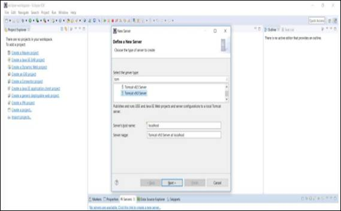

Introducción.
Vamos abordar en estos manuales el curso que recibí en la CIFO de l’Hospitalet en el 2019 / 2020, impartido por Juan Pablo Fuentes. Se basa en instalar manualmente la versión Spring que nos interese (en nuestro caso la última) sin emplear herramientas que facilite esta parte.
La ventaja de trabajar de esta manera es la flexibilidad de elegir la versión de Spring, pero incrementa la complejidad de la gestión y depuración de errores (no son fáciles de interpretar el motivo).
También sirve a nivel educativo para aprender a conocer el trabajo que hacer por detrás herramientas como Maven en la gestión de la carga de librerías.
Instalar tomcat.
Lo descargamos de su web:
Eligimos la versión 10.
Le damos a instalar, indicamos que arranque como servicio.
Dejamos los puertos por defecto si no chocan con alguna aplicación que tengamos instalada. Opcionalmente podemos poner un usuario y contraseña para administrar:
Ya lo tenemos funcionando (está instalado en mi caso en el path C:\Program Files\Apache Software Foundation\Tomcat 10.0). Atención si instalamos Tomcat Administrator, deberemos de asignar a este apartado un puerto (por ejemplo 8085) en Eclipse.
Lo tenemos que añadir al Eclipse el servidor de Tomcat (hay dos maneras de hacerlo, pero elijo esta).
Ahora añadimos el servidor Apache.


Ahora podemos arrancarlo con el botón start. Si da error, revisar el puerto del administrador de tomcat en Eclipse (es un error habitual olvidarse).
Instalar las librerias de Spring de forma manual.
Para descargar las librerías de Spring en la versión que nos interese (en nuestro caso la última) vamos a:
Actualmente a fecha 01/12/2024 el primer enlace deja de funcionar (esta web nos daba en un único sitio todos los ficheros jar que compone la versión de Spring que eligamos).
Tendremos que ir al segundo link que apunta a Maven y aqui deberemos de elegir cada elemento (aop, aspects, beans, context, core, expression, instrument, jcl, jdbc, jms, messaging, orm, oxm, test, tx, web, webflux, webmvc, websocket) que conforma la versión de Spring elegida para trabajar.
En cada elemento se tendrá que descargar los ficheros jar que contenga *javadoc.jar, *sources.jar, *RELEASE.jar. Se guardar en nuestro equipo en cualquier carpeta, por ejemplo en la carpeta libs.
Con fecha 17/10/2022 elijo la de la versión RELEASE la 5.2.22.RELEASE con fecha 11/05/2022.
Abrimos Eclipse, creamos un nuevo proyecto java: New -> Project -> Java Project
Pulsamos Next.
Como Project Name se pone “spring-prueba”, los demás parámetros se dejan como están. Pulsar el botón Finish.
Creamos una carpeta llamada “lib” desde el propio Eclipse. New -> Folder
Folder." width="400" height="340" />En esta carpeta pegamos todos los ficheros *.jar que está en la carpeta libs y se creo al descargamos todos los ficheros *.jar del repositorio de Maven.
Con un copy & paste es suficiente:
Ojo se añadió también el fichero commons-logging-1.2.jar (es importante).
Ahora se añade los ficheros .jar a las librerías del proyecto actual mediante:
spring-prueba -> Properties -> Java Build Path -> Add JARs
Ojo colocarlo en Classpath (Modulepath no – Me dio problemas).
Nos quedará así nuestro proyecto (aparecerá Referenced Libraries, que es donde están los ficheros .jar de Spring):
Configurar nuestro proyecto Spring (spring-prueba) y programar.
Dentro de nuestro proyecto “spring-prueba” vamos a crear el archivo de configuración: New -> File, se llamara applicationContext.xml
Dentro de este fichero pondremos el siguiente código:
applicationContext.xml
<?xml version="1.0" encoding="UTF-8"?>
<beans xmlns="http://www.springframework.org/schema/beans"
xmlns:xsi="http://www.w3.org/2001/XMLSchema-instance"
xmlns:context="http://www.springframework.org/schema/context"
xsi:schemaLocation="http://www.springframework.org/schema/beans
http://www.springframework.org/schema/beans/spring-beans.xsd
http://www.springframework.org/schema/context
http://www.springframework.org/schema/context/spring-context.xsd">
<!-- Zona de definición de nuestros benas -->
</beans>
Atención, hay que colocar el fichero applicationContext.xml dentro de la carpeta src, muy importante.
Creamos en Eclipse el Package: com.trifulcas.springprueba con New -> Package
Dentro de este Package (com.trifulcas.springprueba), creamos una Class Java llamada Saludos.java mediante New -> Class Java
Ahora programaremos un par de métodos:
Saludos.java
package com.trifulcas.springprueba;
public class Saludos {
public String hola() {
return "Hola que tal.";
}
public String adios() {
return "Adios que te vaya bien.";
}
}
Deberemos de realizar dos tareas:
- Indicar en nuestra configuración que tenemos un vean.
- Crear un programa que llame al contexto de Spring.
Configuración – applicationContext.xml
<?xml version="1.0" encoding="UTF-8"?>
<?beans xmlns="http://www.springframework.org/schema/beans"
xmlns:xsi="http://www.w3.org/2001/XMLSchema-instance"
xmlns:context="http://www.springframework.org/schema/context"
xsi:schemaLocation="http://www.springframework.org/schema/beans
http://www.springframework.org/schema/beans/spring-beans.xsd
http://www.springframework.org/schema/context
http://www.springframework.org/schema/context/spring-context.xsd">
<!-- Zona de definición de nuestros benas -->
<bean id="miSaludo" class="com.trifulcas.springprueba.Saludos">
Crear programa que llama a Spring – Main.java
Desde el Package com.trifulcas.springprueba – New -> Class Java
Elegir que incluya “public static void main…”
Main.java
package com.trifulcas.springprueba;
import org.springframework.context.support.ClassPathXmlApplicationContext;
public class Main {
public static void main(String[] args) {
// TODO Auto-generated method stub
// Cargar el contexto
ClassPathXmlApplicationContext context = new ClassPathXmlApplicationContext("applicationContext.xml");
// Pedir el bean
Saludos miSaludo = context.getBean("miSaludo", Saludos.class);
// Ejecutar el metodo
System.out.println(miSaludo.hola());
// Cerrar el contexto
context.close();
}
}
Al ejecutarlo el programa nos devuelve el saludo:
Recordar estos puntos importantes para que no de problemas al ejecutar el programa:
Insertar los ficheros .jar de Spring y Maven (commons-logging-1.2.jar) en Classpath, dentro de Java Build Path.
En Modulepath solo se incluye el jdk que estemos usando.
Commons-logging-1.2.jar no esta incluido en Spring, pero se debe incluir en el punto anterior.
Poner el fichero applicationContext.xml dentro de la carpeta src. El programa espera encontrar el fichero en este sitio.
Añadamos más funcionalidad.
No ha sido complicado y conocemos como funciona esta parte de Spring. Vamos a complicarlo. Creamos interfaces para poder crear diferentes clases: ISaludo.java mediante New -> Java interface
Añadimos este código en ISaludo.java
package com.trifulcas.springprueba;
public interface ISaludo {
String hola();
String adios();
}
Modificamos la Class Java Saludos.java
package com.trifulcas.springprueba;
public class Saludos implements ISaludo{
public String hola() {
return "Hola que tal.";
}
public String adios() {
return "Adios que te vaya bien.";
}
}
Creamos la Class Java llamada Vecino.java (recordar con New -> Class Java)
Vecino.java
package com.trifulcas.springprueba;
public class Vecino implements ISaludo{
@Override
public String hola() {
// TODO Auto-generated method stub
return "Holi vecinito";
}
@Override
public String adios() {
// TODO Auto-generated method stub
return "Hasta luegi!!";
}
}
Añadimos el siguiente código en applicationContext.xml
<?xml version="1.0" encoding="UTF-8"?>
<beans xmlns="http://www.springframework.org/schema/beans"
xmlns:xsi="http://www.w3.org/2001/XMLSchema-instance"
xmlns:context="http://www.springframework.org/schema/context"
xsi:schemaLocation="http://www.springframework.org/schema/beans
http://www.springframework.org/schema/beans/spring-beans.xsd
http://www.springframework.org/schema/context
http://www.springframework.org/schema/context/spring-context.xsd">
<!-- Zona de definición de nuestros benas -->
<bean id="miSaludo" class="com.trifulcas.springprueba.Saludos"></bean>
<bean id="miVecino" class="com.trifulcas.springprueba.Vecino"></bean>
</beans>
Modificamos el fichero Main.java
package com.trifulcas.springprueba;
import org.springframework.context.support.ClassPathXmlApplicationContext;
public class Main {
public static void main(String[] args) {
// TODO Auto-generated method stub
// Cargar el contexto
ClassPathXmlApplicationContext context = new ClassPathXmlApplicationContext("applicationContext.xml");
// Pedir el bean
ISaludo miSaludo = context.getBean("miSaludo", Saludos.class);
// Ejecutar el metodo
System.out.println(miSaludo.hola());
// Pedir el bean
ISaludo miVecino = context.getBean("miVecino", Vecino.class);
// Ejecutar el metodo
System.out.println(miVecino.hola());
// Cerrar el contexto
context.close();
}
}
Ejecutamos el programa y el resultado es: